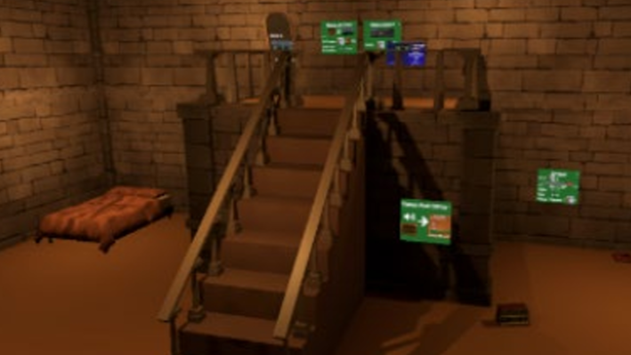
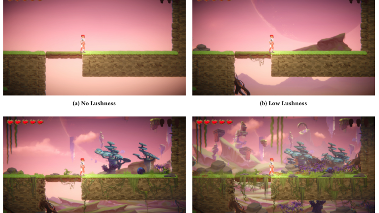
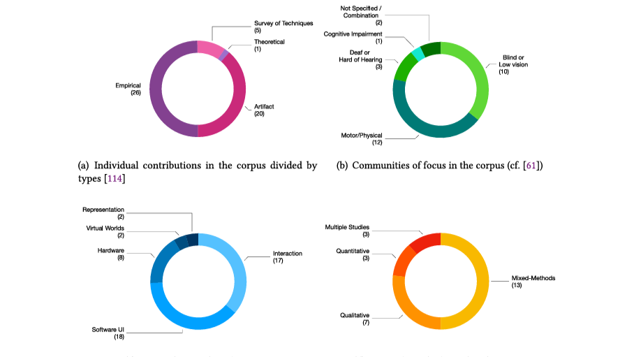
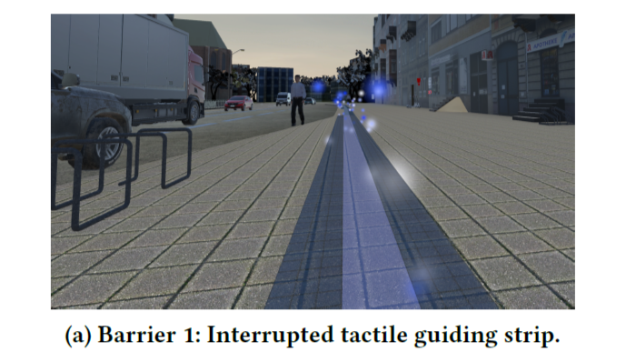
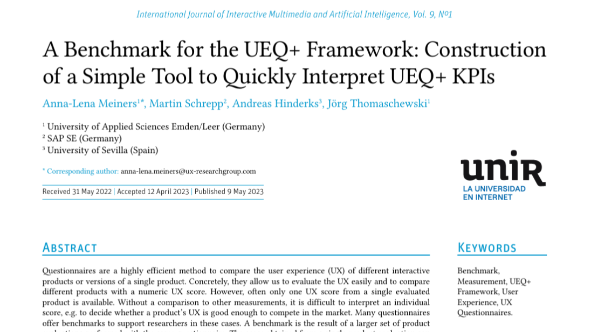
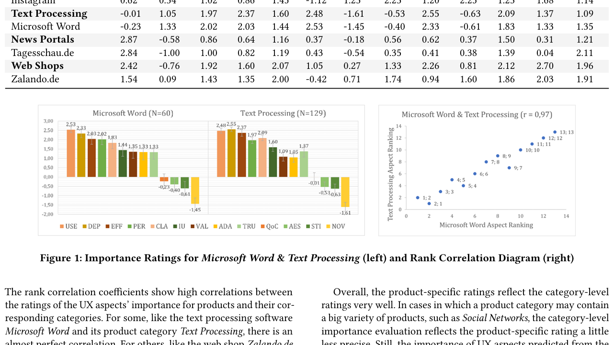

My research centers diverse needs and preferences when interacting with technology.
I am a PhD researcher at the Research Group for HCI and Accessibility at Karlsruhe Institute of Technology, Germany. My academic background is in Computer Science and Digital Media, Philosophy, and Dramatics. Professionally, I combine experiences in product ownership, requirements engineering, and project management from positions in the public and private sector.
My research explores neurodivergent experiences in playful technologies, including VR and games, with a strong focus on inclusive and accessible design. I investigate how multimodal interaction shapes user and player experience across diverse cognitive profiles.
My current research interests include:
- Neurodivergent experiences in interactive systems
- Accessible & inclusive UX design
- Playful & immersive technologies
- Evaluative frameworks for UX quality
- Ethics of technology design
Selected Publications

Anna-Lena Meiners, Phoebe Kray, and Kathrin Gerling. 2025. ASSETS '25. DOI.
This paper presents RetreatVR, a VR prototype with an always-available in-game quiet room based on sensory-room guidelines. It explores how such spaces support neurodivergent players’ self-regulation without breaking immersion.

Anna-Lena Meiners, Damian Reich, Kieran Hicks, Dmitry Alexandrovsky, and Kathrin Gerling. 2025. FDG '25. DOI.
Introduces the concept of lushness — non-interactive visual embellishments — and shows that richer visual environments enhance audiovisual appeal and overall attractiveness in games, even when performance measures such as competence or cognitive load are unchanged.

Kathrin Gerling, Anna-Lena Meiners, Louisa Schumm, Jan Rixen, Marvin Wolf, Zeynep Yildiz, Dmitry Alexandrovsky, and Merlin Opp. 2025. ACM Trans. Access. Comput. DOI.
A literature study analyzing how VR accessibility is defined in HCI research. Highlights that most work focuses on barriers rather than experiential aspects like presence and immersion, and proposes a working definition of VR accessibility emphasizing experience as essential for equitable access.

Timo Brogle*, Andrej Ermoshkin*, Konstantin Vakhutinskiy*, Sven Priewe*, Claas Wittig*, Anna-Lena Meiners, Kathrin Gerling, Dmitry Alexandrovsky. 2024. MuC '24. DOI.
Reports on a VR simulation that allows non-disabled participants to experience access challenges, with the goal of fostering reflection and empathy through embodied interaction with disability-related barriers without simulating having a disability.

Anna-Lena Meiners, Martin Schrepp, Andreas Hinderks, Jörg Thomaschewski. 2024. International Journal of Interactive Multimedia and Artificial Intelligence. DOI.
Presents a practical interpretive tool for UEQ+ KPIs, enabling faster, more actionable insights from UX assessments across interactive systems, supporting evidence-based design decisions.

Anna-Lena Meiners, Jessica Kollmorgen, Martin Schrepp, and Jörg Thomaschewski. 2021. MuC '21. DOI.
Investigates which UX quality aspects (e.g., efficiency, aesthetics, dependability) matter most for different software products, offering guidance for designers and researchers in prioritizing evaluation and development efforts.
Get In Touch
I’m happy to discuss research collaborations, projects, or questions about inclusive and immersive design.
Email: annalena.meiners@posteo.de.